▲ 테라판타지아의 야간 풍경. 조명이 깔린 정원 위로 불 밝힌 다리와 빛나는 바위 조형이 이어진다 사진=한국관광공사
한글날 연휴에 포천 한탄강으로 간다면, 하루를 '낮'과 '밤'으로 나눠 쓰는 편이 낫다. 낮에는 2026년 가을 '한탄강 가든페스타'(9월 12일~11월 1일)가 꽃밭과 정원을 열고, 해가 진 뒤에는 2026년 7월 전 구간 개장한 야간 미디어아트파크 '테라판타지아'가 문을 연다. 두 곳은 티켓이 따로 팔리지만, 서로 걸어서 오갈 수 있는 거리의 같은 한탄강 권역에 붙어 있다.
이 글은 두 곳의 운영시간·요금·매표 위치·교통·주차를 공식 누리집과 공지로 다시 대조해, 10월 8일(목)부터 11일(일)까지의 연휴 코스로 정리했다. 세계드론제전은 2026년 일정이 확인되지 않아 작은 안내 상자로만 다뤘다.
1. 낮은 가든페스타, 밤은 테라판타지아 — 두 곳을 표로 비교
가장 흔한 착각은 '가든페스타 입장권으로 야간까지 볼 수 있다'는 생각이다. 포천시 테라판타지아 공지에 따르면 지난해에는 가든페스타 입장권으로 야간 관람까지 이어서 볼 수 있었지만, 2026년 7월 3일 테라판타지아가 전 구간 개장하면서 발권 방식이 바뀌었다. 올해는 두 곳이 각각 별도로 발권·운영된다.
| 항목 | 한탄강 가든페스타 | 테라판타지아 |
|---|---|---|
| 시간대 | 낮 09:00~18:00 (입장 마감 17:00) | 밤 발권 18:30, 입장 19:30~ (금·토·일·공휴일·그 전날 입장 마감 22:00, 폐장 23:00) |
| 휴장 | 매주 화요일 | 매주 월·화요일 (공휴일·공휴일 전날은 정상 운영) |
| 성인 요금 | 7,000원 (4,000원 상품권 환급) | 12,000원 (6,000원 상품권 환급) |
| 어린이·청소년 | 5,000원 (3,000원 환급) | 8,000원 (4,000원 환급) |
| 매표·주소 | 관인면 창동로 832 (한탄강 생태경관단지) | 영북면 비둘기낭길 191, 전용 매표소는 하늘다리 주차장 |
| 문의 | 031-538-3030 (한탄강 세계지질공원) | 031-538-3030(주간), 031-538-3150(야간 18:00~23:00) |
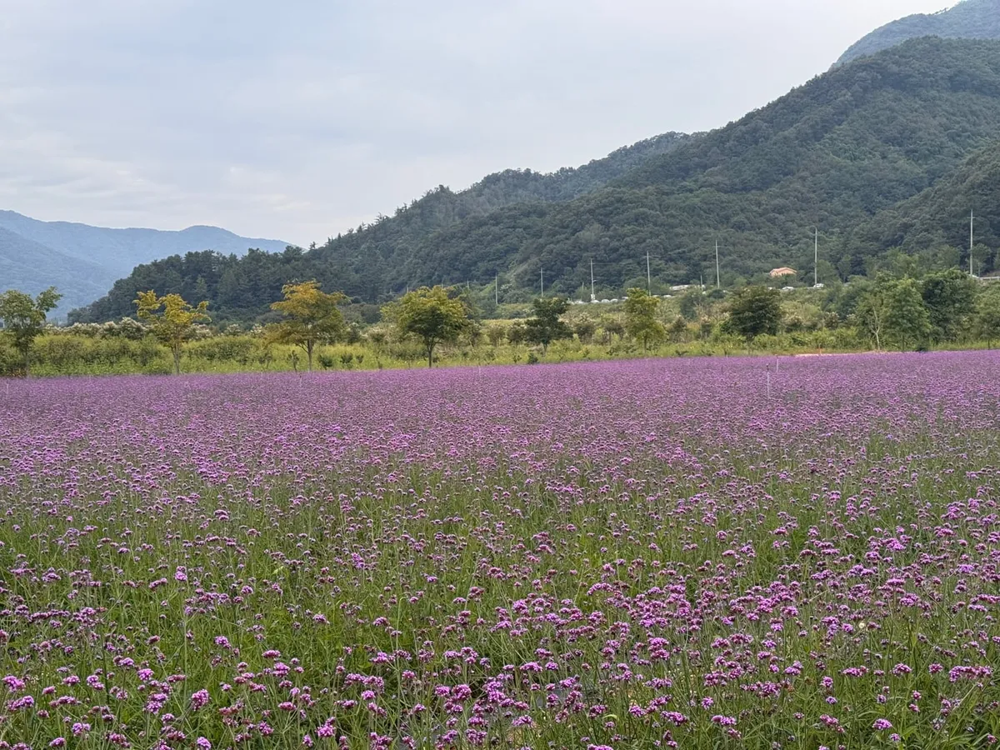
▲ 산자락을 배경으로 보랏빛 꽃이 넓게 펼쳐진 가을 가든페스타 꽃밭(2026년 9월 촬영으로 게시된 공식 사진) 사진=포천 한탄강 가든페스타 공식 누리집
ℹ️ 세계드론제전은? — 2026년 일정은 확인되지 않았다
'포천 한탄강 세계드론제전'은 2025년 10월 9~12일 이 일대에서 열렸고, 이 날짜가 검색 결과에 그대로 남아 있다. 그러나 2026년 개최 일정은 포천시·주최 측 공식 자료로 확인하지 못했다. 확인되는 것은 포천시가 올해 4월 "9월 '대한민국 드론 공방전' 본선 기간 한탄강에서 6000대 드론 라이트쇼를 연다"는 계획을 밝힌 보도뿐이며 세부 날짜는 공개되지 않았다. 드론쇼를 목적으로 온다면 출발 전 포천시 공지와 031-538-3030 문의로 올해 일정 여부를 먼저 확인하고, 이 글의 코스는 드론쇼가 없어도 성립하도록 짰다. 참고로 2025년 첫날에는 오가교차로~행사장 8km에 4시간이 걸렸다는 보도(다음뉴스)가 있었다.
운영 정보 최신 공지는 각 공식 누리집에서 확인할 수 있다. 가든페스타 공식 안내 바로가기 테라판타지아 공식 누리집 바로가기
2. 가든페스타 낮 코스 — 안내도 한 장으로 동선 잡기
행사장은 생각보다 넓어서 안내도를 먼저 보는 편이 좋다. 공식 행사장 안내도에는 Y형 출렁다리, 가든라운지(메인 무대), 열대정원, 애니멀가든, 다목적행사장(플레이존), 한탄강 마켓, 주제정원, 맨발 황토 치유정원 등이 번호로 표시돼 있고, 안내도 상단에는 한탄강 하늘다리와 비둘기낭폭포도 함께 그려져 있다. 주최 측이 권하는 추천 코스는 1.3km(약 1시간 30분)와 2km(약 2시간) 두 가지다.
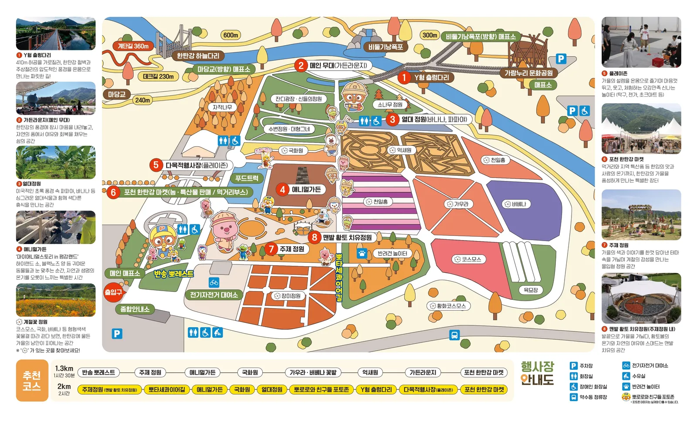
▲ 2026 가을 가든페스타 행사장 안내도. 하늘다리·Y형 출렁다리·비둘기낭폭포가 같은 지도 안에 표시돼 있다 자료=포천 한탄강 가든페스타 공식 누리집
| 시설 | 내용 |
|---|---|
| Y형 출렁다리 | 410m 규모로 안내되는 출렁다리. 매주 화요일 미운영. 자전거·킥보드 진입 불가 |
| 가든라운지(메인 무대) | 한탄강 풍경을 보며 쉬는 공간, 주말 공연(어쿠스틱 음악·마술) 무대 |
| 열대정원 | 바나나·파파야 등 열대식물 전시 |
| 애니멀가든 | '마이애니멀스토리' 협업 동물 교감(하이랜드 소, 양 등). 10월 3~4일 승마체험 운영 공지 |
| 다목적행사장(플레이존) | 탁구·전가·초크아트 등 놀이 공간 |
| 계절꽃 정원 | 코스모스·국화·버베나·가우라·천일홍·억새원 등 |
| 맨발 황토 치유정원·주제정원 | 주제정원 안의 맨발 걷기 공간 |
| 포천 한탄강 마켓·푸드트럭 | 농특산물 판매와 먹거리 부스 |
| 반려견 놀이터 | 목줄 2m 이내·인식표·배변봉투 지참, 맹견 출입 불가 |
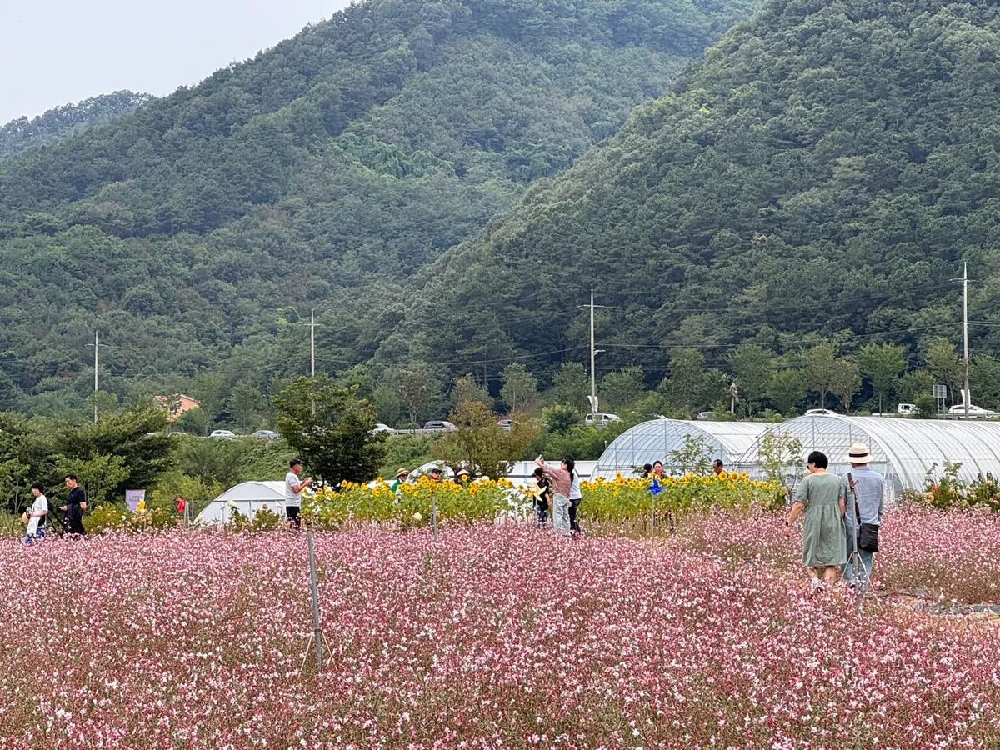
▲ 분홍 꽃밭 사이를 거니는 방문객들. 계절꽃은 시기에 따라 개화 상태가 달라질 수 있다 사진=포천 한탄강 가든페스타 공식 누리집
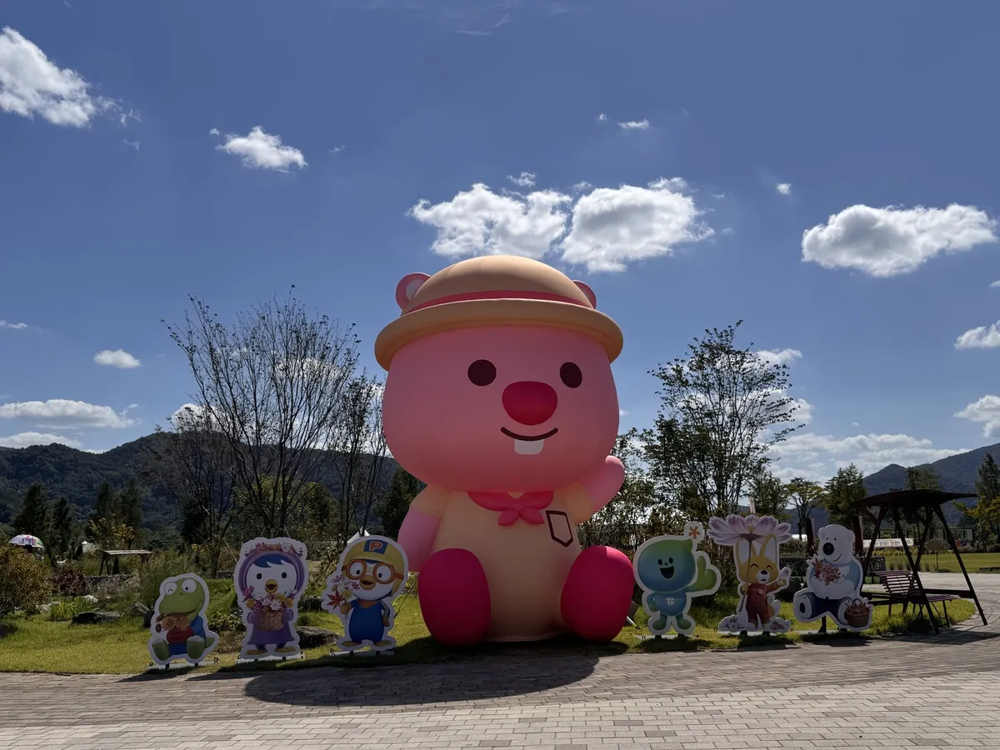
▲ 캐릭터 풍선과 입간판이 놓인 포토존. 안내도에는 '뽀로로와 친구들 포토존'이 별도 표시돼 있다 사진=포천 한탄강 가든페스타 공식 누리집
전기자전거는 09:30~16:30에 대여할 수 있고(카드 결제만 가능), 자동 4인승 1시간 30,000원·반자동 1시간 26,000원 등 요금표가 공식 누리집에 있다. 포천시민은 별도 할인가가 적용된다.
✅ 가든페스타 방문 체크포인트
· 입장 마감 17시 — 폐장(18시) 직전에 도착하면 들어갈 수 없다
· 화요일 휴장이라 연휴 다음 날인 13일(화)은 문을 닫는다
· 무료입장 대상은 포천시민·장애인·국가유공자·7세 미만(무료입장권 배부), 경로·상호결연도시 주민은 50% 감면 — 신분증 지참
· 공식 누리집 gallery에 9월 12일·19일·27일 행사 사진이 올라와 있어 출발 전 꽃밭 상태를 확인할 수 있다
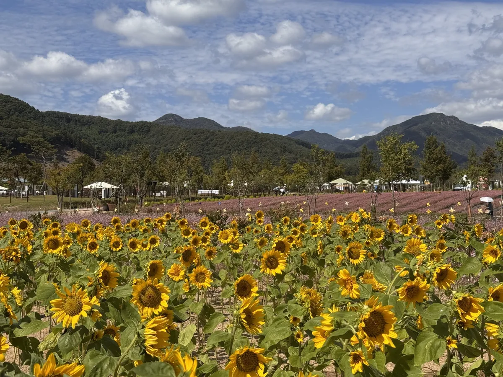
▲ 산을 배경으로 해바라기가 핀 꽃밭(공식 누리집 갤러리 사진). 개화 시기와 품종은 해마다 다르다 사진=포천 한탄강 가든페스타 공식 누리집
3. 밤은 테라판타지아 — 발권 위치와 시간을 놓치지 않으려면
테라판타지아는 한탄강 하늘다리에서 비둘기낭폭포까지 이어지는 약 2.5km 야간 탐방로에 빛·영상·인터랙티브 콘텐츠를 입힌 미디어아트파크다. 포천시 공식 누리집은 총 8개 공간(테라로드·대지의 문·정령의 협곡·빛의 기억·정령의 터·빛의 화산·정령의 축복·은하수의 여울)으로 구성돼 있다고 소개한다. 국민일보는 개장을 7월 15일로 보도했지만, 포천시 공지는 7월 3일부터 전 구간 개장이라고 안내해 이 글은 공식 공지를 따랐다.
| 요일 | 발권 개시 | 입장 개시 | 입장 마감 | 폐장 |
|---|---|---|---|---|
| 수·목 | 18:30 | 19:30 | 21:30 | 23:30 |
| 금·토·일, 공휴일 및 그 전날 | 18:30 | 19:30 | 22:00 | 23:00 |
| 월·화 | 정기 휴관 (공휴일 및 공휴일 전날은 정상 운영) | |||
🕰 시간은 '일몰'에 따라 움직인다
포천시는 9월 공지에서 "입장 시간은 기존 19:30이나 당일 일몰 시간에 따라 탄력적으로 운영되며, 현장 여건에 따라 19:30 이전부터 입장이 진행될 수 있다"고 밝혔다. 이용안내에도 초반 시간대에는 일부 콘텐츠가 다소 흐리게 보일 수 있다는 관람 팁이 적혀 있다. 해가 지면 기온이 크게 떨어지므로 외투를 챙기라는 안내도 있었다. 추석 연휴(9월 24~26일) 연장 운영 때는 관람객 집중을 줄이려 17:30부터 조기 발권을 했고 "21시 이후 방문하면 대기시간이 짧다"는 안내가 나왔다 — 한글날 연휴에도 같은 방식이 적용될지는 공지 확인이 필요하다.
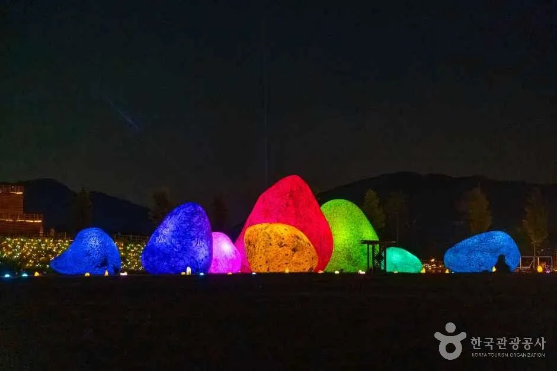
▲ 무지갯빛으로 빛나는 바위 모양 조형물. 야간 관람 구간의 포토 스폿이다 사진=한국관광공사
| 구분 | 내용 |
|---|---|
| 입장료 | 성인 12,000원, 어린이·청소년 8,000원, 단체(20인 이상) 10,000원 (50% 포천사랑상품권 환급) |
| 통합 이용권 | 테라판타지아+가든페스타 16,000원(어린이·청소년 10,000원). 발권 시 환불 불가, 테라판타지아 휴관일(월·화) 사용 불가 |
| 연계 할인(9/12~11/1) | 가든페스타 티켓 지참 시 테라 성인 12,000→10,000원·어린이·청소년 8,000→6,000원 / 테라 티켓 지참 시 가든 성인 7,000→6,000원·어린이·청소년 5,000→4,000원 (발권일로부터 3일 이내, 실물 티켓 제시) |
| 매표소 | 한탄강 하늘다리 주차장(경기도 포천시 영북면 비둘기낭길 191) |
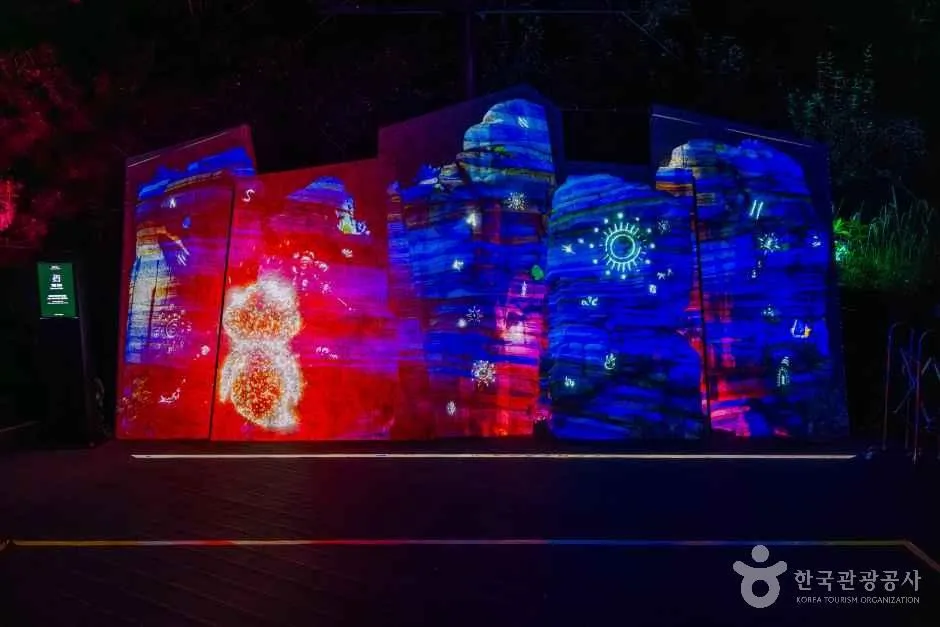
▲ 벽면 위에 영상을 투사한 미디어 연출. 공식 안내에는 '빛의 화산' 등 미디어 파사드 콘텐츠가 소개돼 있다 사진=한국관광공사
4. 한글날 연휴 스케줄 — 요일별로 뭐가 열리나
2026년 한글날(10월 9일)은 금요일이라 9~11일이 3일 연휴다. 테라판타지아 규칙상 10월 8일(목)은 '공휴일 전날'이라 금·토·일과 같은 시간표(입장 마감 22:00)가 적용될 것으로 보인다. 아래 표는 공식 운영 규칙을 날짜에 대입한 것이며, 연휴 특별 운영이 있다면 공지가 우선한다.
| 날짜 | 가든페스타(09:00~18:00) | 테라판타지아(발권 18:30~) |
|---|---|---|
| 10/8(목, 한글날 전날) | 운영 | 운영 (공휴일 전날 시간표 적용 예상) |
| 10/9(금, 한글날) | 운영 | 운영 (입장 마감 22:00) |
| 10/10(토) | 운영 | 운영 (입장 마감 22:00) |
| 10/11(일) | 운영 | 운영 (입장 마감 22:00) |
| 10/12(월) | 운영 | 휴관 (월요일 규정, 공휴일 여부는 공지 확인) |
| 10/13(화) | 휴장 | 휴관 |
| 시각 | 할 일 | 메모 |
|---|---|---|
| 08:30~09:00 | 가든페스타 도착, 개장 시간에 맞춰 입장 | 국도 87·37호선 CCTV 사전 확인 |
| 09:00~12:30 | 꽃밭·열대정원·애니멀가든 산책(추천 코스 1.3~2km) | Y형 출렁다리 포함 |
| 12:30~15:30 | 마켓·푸드트럭 식사, 하늘다리·비둘기낭 폭포 산책 | 같은 권역(안내도 상단) |
| 15:30~17:30 | 가든페스타 재입장 또는 휴식, 연계 할인용 티켓 보관 | 가든 입장 마감 17:00 유의 |
| 18:00~19:30 | 하늘다리 주차장 매표소에서 테라판타지아 발권(18:30~), 저녁 | 추위 대비 외투 |
| 19:30~22:00 | 테라판타지아 관람(약 2.5km 동선), 귀가 | 귀가 시간 분산 필요 |
5. 가는 길·주차 — 공식 확인된 것만
내비게이션은 낮에는 '한탄강 생태경관단지'(관인면 창동로 832), 밤에는 '한탄강 하늘다리'를 찍으라는 것이 공식 안내다. 두 곳의 좌표(한국관광공사 정보)는 직선거리로 하늘다리~테라판타지아 약 0.2km, 하늘다리~Y형 출렁다리 약 0.9km, 비둘기낭폭포~하늘다리 약 0.7km로 붙어 있다. 실제 도로·도보 이동 시간은 공식 자료에 없으므로 현장 안내와 지도 앱을 확인해야 한다.
| 구분 | 안내 내용 | 출처 |
|---|---|---|
| 가든페스타 자가용 | 내비게이션에 '한탄강 생태경관단지' 또는 '경기도 포천시 관인면 창동로 832' 검색 | 가든페스타 오시는 길 |
| 가든페스타 대중교통 | 포천시청 앞 100·60-1·60-2번 → 약수동 하차 후 도보 5분 / 포천터미널 앞 99번 → 한탄강 생태경관단지 하차 | 가든페스타 오시는 길 |
| 테라판타지아 자가용 | 내비게이션에 '한탄강 하늘다리' 검색, 전용 매표소는 하늘다리 주차장 | 테라판타지아 오시는 길·공지 |
| 테라판타지아 대중교통 | 동서울터미널·의정부버스터미널·도봉산역 광역환승센터 → 운천터미널(영북면사무소) 하차 → 10번 또는 53번 → '한탄강 하늘다리'·'한탄강 비둘기낭' 정류장 하차 후 도보 약 10분 | 테라판타지아 오시는 길 |
| 주차(추석 연휴 사례) | 1차 하늘다리 주차장 → 2차 비둘기낭 주차장 → 만차 시 가람누리 주차장(200대). 비둘기낭↔하늘다리, 가람누리↔하늘다리 순환 무료 셔틀 운영 | 테라판타지아 9월 22일 공지 (한글날 연휴 적용 여부는 확인 필요) |
📍 실시간 교통 확인 — 공식 CCTV
가든페스타 공식 누리집은 국도 87호선 영로대교·오가리, 국도 37호선 신오가교차로의 실시간 교통 CCTV(국가교통정보센터 ITS 제공)를 공지하고 있다. 영상은 실제 상황과 30초~1분가량 차이가 날 수 있다고 안내돼 있다. 출발 전과 이동 중에 정체 구간을 확인해 진입 시간을 조정하는 데 쓸 수 있다.
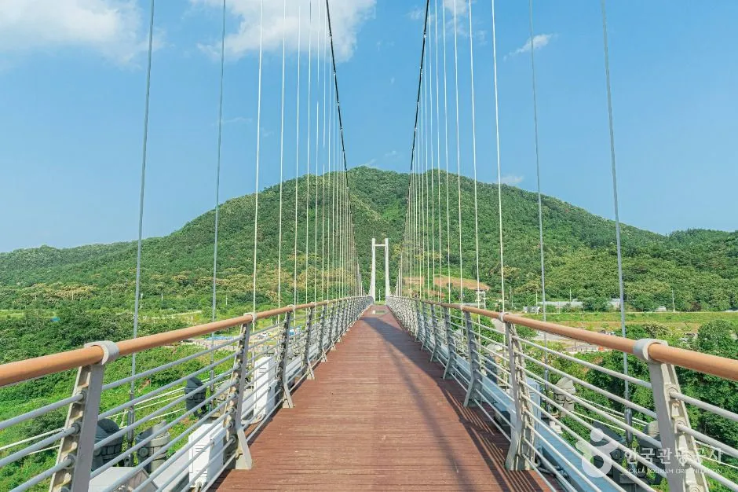
▲ 한탄강 하늘다리 상판. 테라판타지아 매표소는 이 다리 인근 하늘다리 주차장에 있다 사진=한국관광공사
✅ 자동차 이용자 체크리스트
· 낮 방문은 개장 직후(09시 전후), 밤 방문은 발권(18:30) 30분 전 도착을 목표로
· 야간 주차는 하늘다리 주차장이 1차, 만차 시 비둘기낭·가람누리 주차장과 셔틀을 이용하는 것이 추석 연휴 공지의 흐름이었다 — 한글날 연휴 운영은 031-538-3030으로 확인
· 귀가 시간대에는 산길·강변 도로 비중이 높아 야간 시야에 주의하고, 해가 지면 기온이 크게 떨어진다는 운영 공지도 참고
· 주말 포천 정체 패턴은 명성산 억새 시즌 주차 전쟁 기사에서 다룬 국도 병목과 비슷하게 나타날 수 있다(추정)
6. 근처 가볼 곳 — 걸어서 하늘다리·비둘기낭, 차로 화적연
가든페스타와 테라판타지아 사이 낮 시간에는 같은 권역의 한탄강 명소를 묶는 것이 효율적이다. 하늘다리와 비둘기낭폭포는 가든페스타 행사장 안내도에도 나와 있다.
| 명소 | 위치 | 테라판타지아에서 직선거리 | 특징 |
|---|---|---|---|
| 한탄강 하늘다리 | 영북면 비둘기낭길 211 | 약 0.2km | 한탄강 위 현수교, 테라판타지아 출발점 |
| 비둘기낭 폭포 | 영북면 대회산리 | 약 0.5km | 동굴 같은 암벽 아래 에메랄드빛 물이 고이는 지질공원 명소 |
| 멍우리 협곡 | 관인면 중리 | 약 1.5km | 한탄강 세계지질공원 명소 |
| 화적연 | 관인면 사정리 | 약 5km | 강 가운데 큰 바위가 솟은 지질공원 명소 |
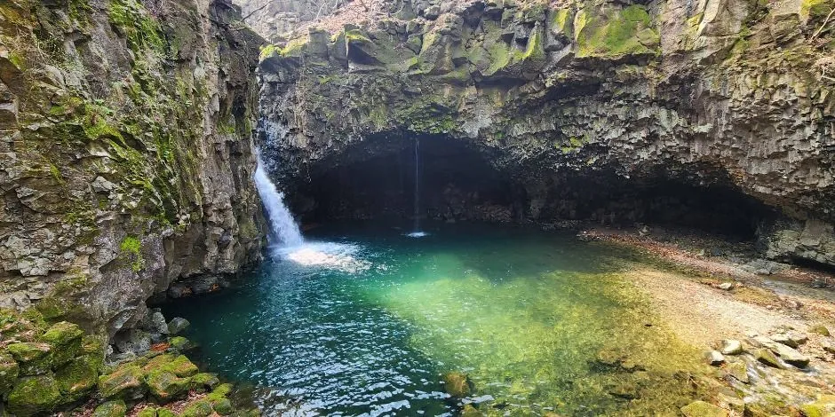
▲ 동굴 같은 암벽 아래 에메랄드빛 물이 고인 비둘기낭 폭포 사진=한국관광공사
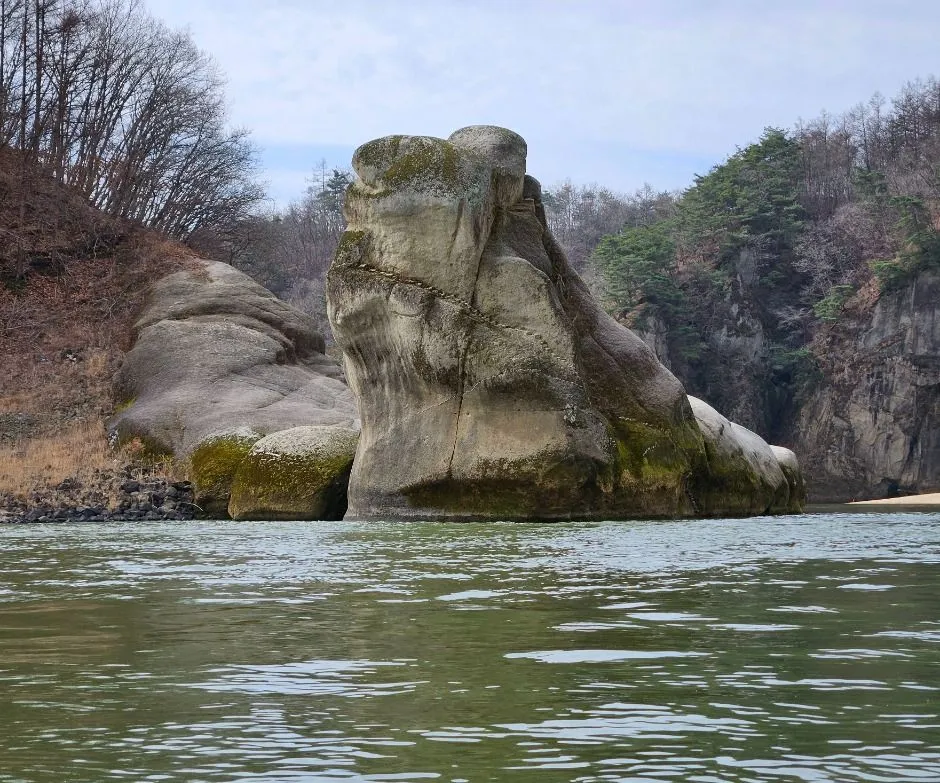
▲ 강물 위로 솟은 화적연의 큰 바위 사진=한국관광공사
한탄강 주상절리길 트레킹과 고석정 코스는 강원 철원, 재인폭포는 경기 연천이 본거지다. 더 멀리 나갈 여유가 있다면 철원 고석정 꽃밭과 순담계곡 주상절리길 기사와 연천 재인폭포 기사를 참고하면 된다.
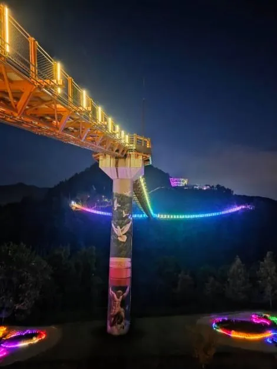
▲ 조명을 켠 한탄강 Y형 출렁다리의 밤 모습 사진=한국관광공사
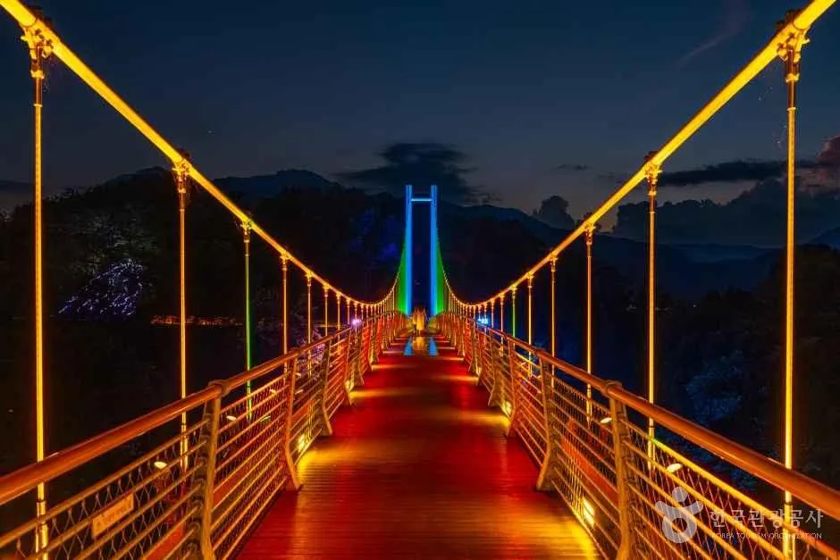
▲ 조명이 켜진 출렁다리의 밤 풍경 사진=한국관광공사
7. 요약
한글날 연휴(10월 8~11일) 포천 한탄강 코스는 '낮 가든페스타 + 밤 테라판타지아'로 짜는 것이 공식 정보로 뒷받침되는 조합이다. 가든페스타는 09:00~18:00(입장 마감 17:00), 매주 화요일 휴장, 성인 7,000원이고, 테라판타지아는 18:30 발권·19:30 입장(일몰에 따라 탄력 운영), 금·토·일·공휴일·그 전날 22:00 입장 마감, 성인 12,000원이다.
두 곳은 티켓이 별도이고, 테라판타지아 전용 매표소는 하늘다리 주차장에 있다. 서로의 티켓을 보여주면 3일 이내 연계 할인이 된다. 교통은 국도 87·37호선 실시간 CCTV로 확인하고, 주차는 추석 연휴처럼 하늘다리·비둘기낭·가람누리 주차장과 순환 셔틀이 운영될 수 있으나 한글날 연휴 공지를 따로 확인해야 한다. 세계드론제전 2026년 일정은 확인되지 않았다.